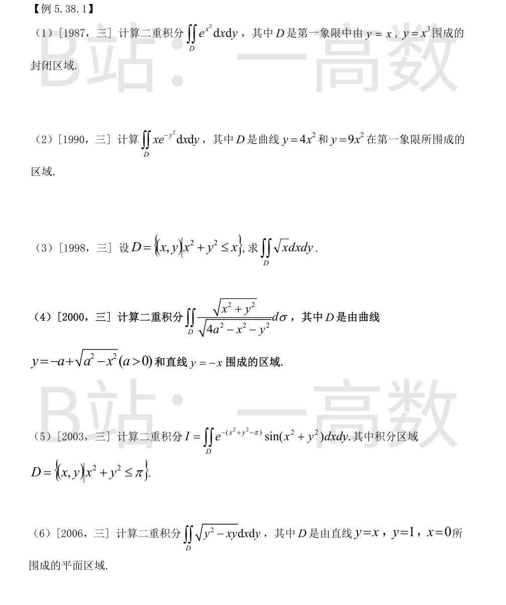
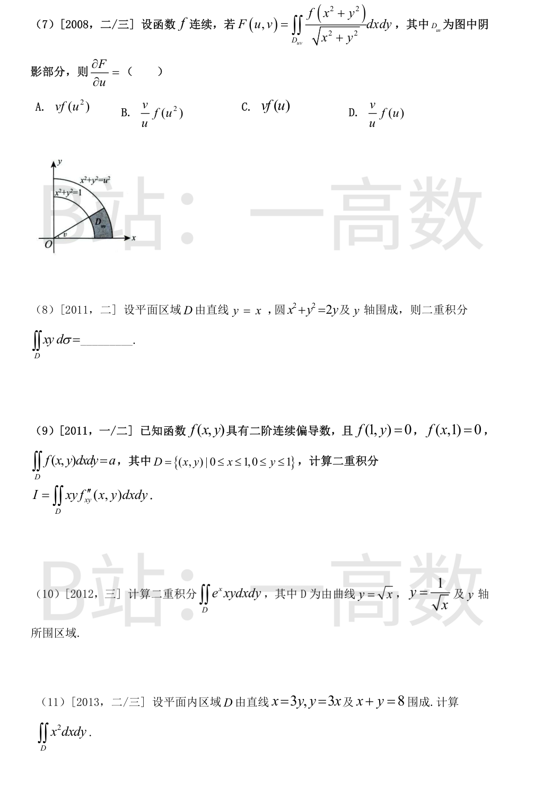
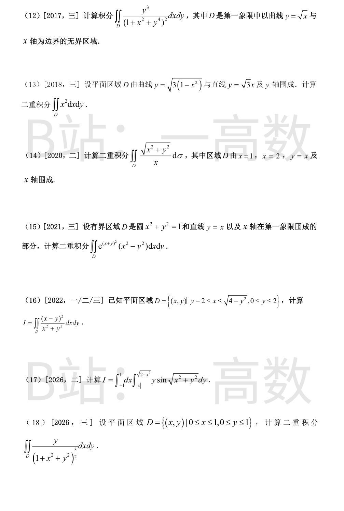
两曲线交于 (0,0),(1,1)，且 0≤x≤1 时 x≥x^3，故 D={0≤x≤1, x^3≤y≤x}。
$$I=\int_0^1 e^{x^2}\Big(\int_{x^3}^{x}dy\Big)dx=\int_0^1 e^{x^2}(x-x^3)dx$$
$$\int_0^1 e^{x^2}x\,dx=\frac12(e-1),\qquad \int_0^1 e^{x^2}x^3dx=\frac12\int_0^1 ue^u du=\frac12\big[(u-1)e^u\big]_0^1=\frac12$$
$$I=\frac{e-1}{2}-\frac12=\frac{e-2}{2}$$
先对 x 积分（e^{-y^2} 对 y 无初等原函数）：D={y≥0, √y/3≤x≤√y/2}。
$$I=\int_0^{+\infty}e^{-y^2}\cdot\frac12\Big(x^2\Big)\Big|_{\sqrt y/3}^{\sqrt y/2}dy=\frac12\int_0^{+\infty}e^{-y^2}\Big(\frac y4-\frac y9\Big)dy=\frac{5}{72}\int_0^{+\infty}y e^{-y^2}dy$$
$$\int_0^{+\infty}y e^{-y^2}dy=\frac12,\qquad I=\frac{5}{72}\cdot\frac12=\frac{5}{144}$$
极坐标：r≤cosθ, θ∈[-π/2,π/2]。
$$I=\int_{-\pi/2}^{\pi/2}\int_0^{\cos\theta}\sqrt{r\cos\theta}\;r\,dr\,d\theta=\int_{-\pi/2}^{\pi/2}\sqrt{\cos\theta}\cdot\frac25(\cos\theta)^{5/2}d\theta=\frac25\int_{-\pi/2}^{\pi/2}\cos^3\theta\,d\theta$$
$$\int_{-\pi/2}^{\pi/2}\cos^3\theta\,d\theta=2\int_0^{\pi/2}(1-\sin^2\theta)d\sin\theta=2\Big(1-\frac13\Big)=\frac43,\qquad I=\frac25\cdot\frac43=\frac{8}{15}$$
y=−a+√(a²−x²) 是圆 x²+(y+a)²=a² 的上半圆。极坐标下该圆为 r=−2a sinθ，弦 y=−x 即 θ=−π/4，故 D={−π/4≤θ≤0, 0≤r≤−2a sinθ}。
$$I=\int_{-\pi/4}^{0}\int_0^{-2a\sin\theta}\frac{r}{\sqrt{4a^2-r^2}}\,r\,dr\,d\theta$$
利用 $$\int\frac{r^2}{\sqrt{4a^2-r^2}}dr=-\frac r2\sqrt{4a^2-r^2}+2a^2\arcsin\frac{r}{2a}$$
在 r=−2a sinθ（θ∈[−π/4,0]）处取值 a²sin2θ−2a²θ，在 r=0 处为 0，故
$$I=a^2\int_{-\pi/4}^{0}(\sin 2\theta-2\theta)d\theta=a^2\Big[-\frac{\cos2\theta}{2}-\theta^2\Big]_{-\pi/4}^0=a^2\Big(-\frac12+\frac{\pi^2}{16}\Big)$$
极坐标，u=r²：
$$I=\int_0^{2\pi}d\theta\int_0^{\sqrt\pi}e^{-(r^2-\pi)}\sin r^2\;r\,dr=\pi e^{\pi}\int_0^{\pi}e^{-u}\sin u\,du$$
$$\int e^{-u}\sin u\,du=\frac{e^{-u}(-\sin u-\cos u)}{2},\qquad \int_0^{\pi}=\frac{e^{-\pi}}{2}+\frac12=\frac{1+e^{-\pi}}{2}$$
$$I=\pi e^{\pi}\cdot\frac{1+e^{-\pi}}{2}=\frac{\pi(e^{\pi}+1)}{2}$$
D={0≤y≤1, 0≤x≤y}，被积函数与 x 的关系简单，先对 x 积分：
$$\sqrt{y^2-xy}=\sqrt y\sqrt{y-x},\qquad \int_0^y\sqrt{y-x}\,dx=\frac23 y^{3/2}$$
$$I=\int_0^1 \sqrt y\cdot\frac23 y^{3/2}dy=\frac23\int_0^1 y^2dy=\frac{2}{9}$$
极坐标下被积函数 f(x²+y²)/√(x²+y²)·r = f(r²)：
$$F(u,v)=\int_0^v d\theta\int_1^u f(r^2)dr=v\int_1^u f(r^2)dr$$
由变限积分求导，$$\frac{\partial F}{\partial u}=v f(u^2)$$，选 A。
极坐标：圆 r=2sinθ，D 夹在 y=x（θ=π/4）与 y 轴（θ=π/2）之间，故 D={π/4≤θ≤π/2, 0≤r≤2sinθ}。
$$I=\int_{\pi/4}^{\pi/2}\int_0^{2\sin\theta}r^2\cos\theta\sin\theta\cdot r\,dr\,d\theta=\int_{\pi/4}^{\pi/2}\cos\theta\sin\theta\cdot\frac{(2\sin\theta)^4}{4}d\theta=4\int_{\pi/4}^{\pi/2}\sin^5\theta\cos\theta\,d\theta$$
$$=4\cdot\frac{\sin^6\theta}{6}\Big|_{\pi/4}^{\pi/2}=\frac23\Big(1-\frac18\Big)=\frac{7}{12}$$
先对 y 分部积分：
$$\int_0^1 y f_{xy}''\,dy=\big[yf_x'\big]_0^1-\int_0^1 f_x' dy=f_x'(x,1)-\frac{d}{dx}\int_0^1 f(x,y)dy$$
由 f(x,1)≡0 得 f_x'(x,1)=0，故
$$I=-\int_0^1 x\,\frac{d}{dx}\Big(\int_0^1 f(x,y)dy\Big)dx=-\Big[x\int_0^1 f(x,y)dy\Big]_0^1+\int_0^1\!\!\int_0^1 f\,dxdy= -\int_0^1 f(1,y)dy+a=0+a=a$$
两曲线交于 x=1，D={0≤x≤1, √x≤y≤1/√x}。
$$I=\int_0^1 e^x x\cdot\frac12\Big(y^2\Big)\Big|_{\sqrt x}^{1/\sqrt x}dx=\frac12\int_0^1 e^x x\Big(\frac1x-x\Big)dx=\frac12\int_0^1 e^x(1-x^2)dx$$
$$\int_0^1 e^x dx=e-1,\qquad \int_0^1 x^2e^xdx=\big[e^x(x^2-2x+2)\big]_0^1=e-2$$
$$I=\frac12\big[(e-1)-(e-2)\big]=\frac12$$
顶点 (0,0)、(2,6)、(6,2)。x 先积：
$$I=\int_0^2 x^2\int_{x/3}^{3x}dy\,dx+\int_2^6 x^2\int_{x/3}^{8-x}dy\,dx=\int_0^2 x^2\cdot\frac{8x}{3}dx+\int_2^6 x^2\Big(8-\frac{4x}{3}\Big)dx$$
$$=\frac83\cdot4+\Big[\frac{8x^3}{3}-\frac{x^4}{3}\Big]_2^6=\frac{32}{3}+\Big(\frac{1728-1296}{3}-\frac{64-16}{3}\Big)=\frac{32}{3}+128=\frac{416}{3}$$
D={x≥0, 0≤y≤√x}，先对 y 积分（注意 $\frac{\partial}{\partial y}(1+x^2+y^4)^{-1}=-\frac{4y^3}{(1+x^2+y^4)^2}$）：
$$\int_0^{\sqrt x}\frac{y^3\,dy}{(1+x^2+y^4)^2}=-\frac14\Big[\frac{1}{1+x^2+y^4}\Big]_0^{\sqrt x}=\frac14\Big(\frac{1}{1+x^2}-\frac{1}{1+2x^2}\Big)$$
$$I=\frac14\int_0^{+\infty}\Big(\frac{1}{1+x^2}-\frac{1}{1+2x^2}\Big)dx=\frac14\Big(\frac\pi2-\frac{\pi}{2\sqrt2}\Big)=\frac{\pi(2-\sqrt2)}{16}$$
y=√3x 与椭圆弧交于 x=1/√2，D={0≤x≤1/√2, √3x≤y≤√(3(1−x²))}。
$$I=\sqrt3\int_0^{1/\sqrt2}x^2\sqrt{1-x^2}\,dx-\sqrt3\int_0^{1/\sqrt2}x^3dx$$
令 x=sin t（t: 0→π/4）：$\int_0^{1/\sqrt2}x^2\sqrt{1-x^2}dx=\int_0^{\pi/4}\sin^2t\cos^2t\,dt=\frac14\int_0^{\pi/4}\sin^2 2t\,dt=\frac{\pi}{32}$；$\int_0^{1/\sqrt2}x^3dx=\frac{1}{16}$。
$$I=\sqrt3\Big(\frac{\pi}{32}-\frac{1}{16}\Big)=\frac{\sqrt3(\pi-2)}{32}$$
极坐标：θ∈[0,π/4]，r 从 secθ 到 2secθ；被积函数 √(x²+y²)/x = secθ。
$$I=\int_0^{\pi/4}\sec\theta\cdot\frac12\Big[(2\sec\theta)^2-\sec^2\theta\Big]d\theta=\frac32\int_0^{\pi/4}\sec^3\theta\,d\theta$$
$$\int_0^{\pi/4}\sec^3\theta\,d\theta=\frac12\big[\sec\theta\tan\theta+\ln(\sec\theta+\tan\theta)\big]_0^{\pi/4}=\frac12\big(\sqrt2+\ln(1+\sqrt2)\big)$$
$$I=\frac34\big(\sqrt2+\ln(1+\sqrt2)\big)$$
令 u=x+y, v=x−y（则 x²−y²=uv，(x+y)²=u²，J=1/2，dxdy=½dudv）。区域变为 {0≤v≤min(u,√(2−u²)), 0≤u≤√2}。
$$I=\frac12\iint e^{u^2}uv\,dudv=\frac14\int_0^{\sqrt2}e^{u^2}u\,v_{\max}^2\,du$$
当 0≤u≤1 时 v_max=u：$\frac14\int_0^1 e^{u^2}u^3du=\frac18\int_0^1 we^w dw=\frac18$；当 1≤u≤√2 时 v_max²=2−u²：$\frac14\int_1^{\sqrt2}e^{u^2}u(2-u^2)du=\frac18\int_1^2 e^w(2-w)dw=\frac18\big[(3-w)e^w\big]_1^2=\frac{e^2-2e}{8}$。
$$I=\frac18+\frac{e^2-2e}{8}=\frac{(e-1)^2}{8}$$
D 由圆 x²+y²=4（右半）、直线 x=y−2 与 x 轴围成，原点在 D 内。极坐标下被积函数为 (cosθ−sinθ)²：射线 0≤θ≤π/2 穿出圆 r=2；π/2≤θ≤π 穿出直线 r=2/(sinθ−cosθ)。
$$I=\int_0^{\pi/2}(\cos\theta-\sin\theta)^2\cdot2\,d\theta+\int_{\pi/2}^{\pi}(\cos\theta-\sin\theta)^2\cdot\frac12\cdot\frac{4}{(\sin\theta-\cos\theta)^2}d\theta$$
第一段：$2\int_0^{\pi/2}(1-\sin2\theta)d\theta=2\big(\frac\pi2-1\big)=\pi-2$；第二段被积函数恒为 2，积分 $=\pi$。
$$I=(\pi-2)+\pi=2\pi-2$$
积分区域：|x|≤y≤√(2−x²)，即 y≥|x| 且 x²+y²≤2，极坐标下为扇形 {π/4≤θ≤3π/4, 0≤r≤√2}（因 |cosθ|≤√2/2 时 1/|cosθ|≥√2，r 上限由 √2 决定）。
$$I=\int_{\pi/4}^{3\pi/4}\sin\theta\,d\theta\int_0^{\sqrt2}r^2\sin r\,dr=\sqrt2\int_0^{\sqrt2}r^2\sin r\,dr$$
$$\int_0^{\sqrt2}r^2\sin r\,dr=\big[-r^2\cos r+2(r\sin r+\cos r)\big]_0^{\sqrt2}=2\sqrt2\sin\sqrt2-2$$
$$I=\sqrt2(2\sqrt2\sin\sqrt2-2)=4\sin\sqrt2-2\sqrt2$$
先对 y 积分：
$$\int_0^1\frac{y\,dy}{(1+x^2+y^2)^{3/2}}=\Big[-\frac{1}{\sqrt{1+x^2+y^2}}\Big]_0^1=\frac{1}{\sqrt{1+x^2}}-\frac{1}{\sqrt{2+x^2}}$$
$$I=\int_0^1\frac{dx}{\sqrt{1+x^2}}-\int_0^1\frac{dx}{\sqrt{2+x^2}}=\ln(1+\sqrt2)-\big[\ln(1+\sqrt3)-\ln\sqrt2\big]=\ln\frac{\sqrt2(1+\sqrt2)}{1+\sqrt3}=\ln\frac{2+\sqrt2}{1+\sqrt3}$$
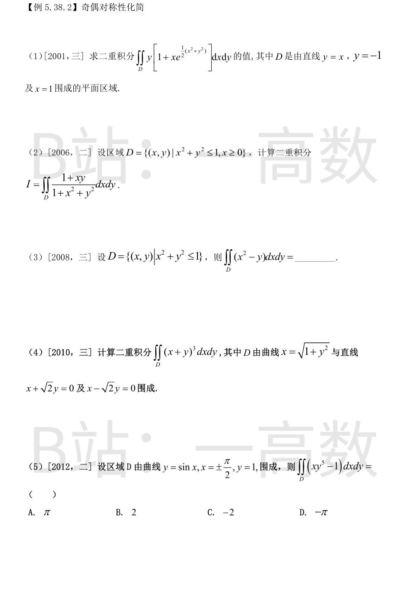
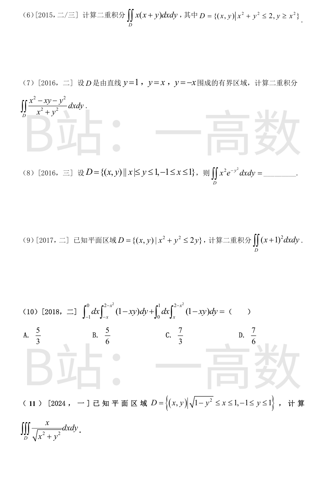
D 为三角形 {(x,y): y≥−1, x≤1, y≥x}，顶点 (−1,−1),(1,−1),(1,1)。
$$I=\iint_D y\,dxdy+\iint_D xy\,e^{(x^2+y^2)/2}dxdy$$
第一项：$$\int_{-1}^1\!\int_{-1}^{x}y\,dy\,dx=\int_{-1}^1\frac{x^2-1}{2}dx=\frac12\Big(\frac23-2\Big)=-\frac23$$
第二项：内层 $\int_{-1}^x y e^{y^2/2}dy=e^{x^2/2}-e^{1/2}$，故积分为 $\int_{-1}^1 x\big(e^{x^2}-e^{(x^2+1)/2}\big)dx=0$（奇函数在对称区间上）。
$$I=-\frac23$$
D 关于 x 轴对称，xy 项关于 y 为奇 → 积分为 0。剩余部分用极坐标（θ∈[−π/2,π/2], 0≤r≤1）：
$$I=\int_{-\pi/2}^{\pi/2}d\theta\int_0^1\frac{r}{1+r^2}dr=\pi\cdot\frac12\ln2=\frac{\pi}{2}\ln2$$
∬_D y dxdy=0（对称性）。由轮换对称 $\iint x^2=\iint y^2=\frac12\iint(x^2+y^2)$：
$$\iint_D x^2\,dxdy=\frac12\int_0^{2\pi}d\theta\int_0^1 r^3dr=\frac12\cdot2\pi\cdot\frac14=\frac{\pi}{4}$$
D 关于 x 轴对称，展开 (x+y)^3=x^3+3x^2y+3xy^2+y^3，奇次项（含 y 的奇数次）积分为 0，剩 $\iint(x^3+3xy^2)$。
水平条带（0≤y≤1，x 从 √2y 到 √(1+y²)）：
$$\int_{\sqrt2 y}^{\sqrt{1+y^2}}(x^3+3xy^2)dx=\Big[\frac{x^4}{4}+\frac32x^2y^2\Big]_{\sqrt2 y}^{\sqrt{1+y^2}}=\frac14+2y^2$$
（中间项 (1+y²)²/4+3y²(1+y²)/2 = 1/4+2y²+7y^4/4，减去下限处 7y^4。）
$$I=2\int_0^1\Big(\frac14+2y^2\Big)dy=2\Big(\frac14+\frac23\Big)=\frac{11}{6}$$
D 关于 y 轴对称（−π/2≤x≤π/2, sinx≤y≤1），xy^5 关于 x 为奇函数 → 积分为 0。
$$\iint_D(xy^5-1)dxdy=-\iint_D dxdy=-\int_{-\pi/2}^{\pi/2}(1-\sin x)dx=-\big(\pi-0\big)=-\pi$$
选 D。
D 关于 y 轴对称，xy 项为奇 → 0。剩 ∬_D x²：
$$\iint_D x^2 dxdy=\int_{-1}^1 x^2\big(\sqrt{2-x^2}-x^2\big)dx=2\int_0^1 x^2\sqrt{2-x^2}dx-\frac25$$
令 x=√2 sin t：$\int_0^1 x^2\sqrt{2-x^2}dx=4\int_0^{\pi/4}\sin^2t\cos^2t\,dt=\int_0^{\pi/4}\frac{1-\cos4t}{2}dt=\frac{\pi}{8}$。
$$I=2\cdot\frac{\pi}{8}-\frac25=\frac{\pi}{4}-\frac25$$
D={0≤y≤1, −y≤x≤y} 关于 y 轴对称，xy 项为奇 → 0。极坐标下 (x²−y²)/(x²+y²)=cos2θ，D 为 {π/4≤θ≤3π/4, 0≤r≤1/sinθ}：
$$I=\int_{\pi/4}^{3\pi/4}\cos2\theta\cdot\frac{1}{2\sin^2\theta}d\theta=\frac12\int_{\pi/4}^{3\pi/4}(\csc^2\theta-2)d\theta=\frac12\big[-\cot\theta-2\theta\big]_{\pi/4}^{3\pi/4}$$
$$=\frac12\big[(1-\tfrac{3\pi}{2})-(-1-\tfrac{\pi}{2})\big]=1-\frac{\pi}{2}$$
D={0≤y≤1, −y≤x≤y}，先对 x 积分：
$$I=\int_0^1 e^{-y^2}\cdot\frac{y^3}{3}dy=\frac13\int_0^1 y^3e^{-y^2}dy=\frac16\int_0^1 ue^{-u}du=\frac16\big[-(u+1)e^{-u}\big]_0^1=\frac16\Big(1-\frac2e\Big)$$
D 为圆心 (0,1)、半径 1 的圆盘。
$$\iint_D(x+1)^2dxdy=\iint_D x^2dxdy+2\iint_D x\,dxdy+\iint_D dxdy$$
∬x=0（对称性）；∬x²=π·1²/4=π/4（$\iint x^2=\frac12\iint r^2$）；面积=π。
$$I=\frac{\pi}{4}+\pi=\frac{5\pi}{4}$$
两块区域合起来是 D={−1≤x≤1, |x|≤y≤2−x²}（V 形折线 y=|x| 与抛物线 y=2−x² 之间），关于 y 轴对称。xy 关于 x 为奇 → 积分为 0。
$$I=\iint_D dxdy=\int_{-1}^1(2-x^2-|x|)dx=2\int_0^1(2-x^2-x)dx=2\Big(2-\frac13-\frac12\Big)=\frac{7}{3}$$
选 C。
D 为正方形 [0,1]×[−1,1] 内挖去半单位圆的部分，极坐标下 {−π/2≤θ≤π/2, 1≤r≤min(secθ,cscθ)}，即 0≤θ≤π/4 时 r≤secθ，π/4≤θ≤π/2 时 r≤cscθ。由对称性取上半乘 2：
$$I=2\Big[\int_0^{\pi/4}\cos\theta\cdot\frac{\sec^2\theta-1}{2}d\theta+\int_{\pi/4}^{\pi/2}\cos\theta\cdot\frac{\csc^2\theta-1}{2}d\theta\Big]$$
第一段 $=\frac12\big[\ln(\sec\theta+\tan\theta)-\sin\theta\big]_0^{\pi/4}=\frac12\big(\ln(1+\sqrt2)-\tfrac{\sqrt2}{2}\big)$；
第二段 $=\frac12\big[-\tfrac{1}{\sin\theta}-\sin\theta\big]_{\pi/4}^{\pi/2}=\frac12\big(-2+\tfrac{3\sqrt2}{2}\big)$。
$$I=\ln(1+\sqrt2)-\frac{\sqrt2}{2}-2+\frac{3\sqrt2}{2}=\sqrt2-2+\ln(1+\sqrt2)$$
（验算：换序 $I=2\int_0^1 x\big[\ln(1+\sqrt{1+x^2})-\ln(1+\sqrt{1-x^2})\big]dx$ 得同值。）
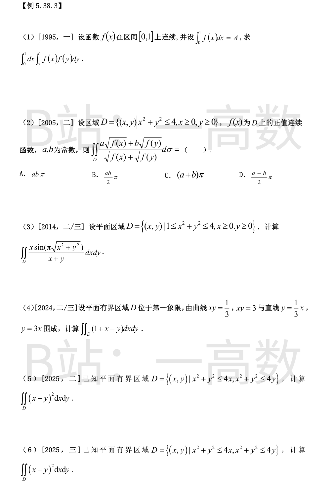
记 I=∬_{0≤x≤y≤1} f(x)f(y)dxdy（对角线上方三角形）。由 f(x)f(y) 关于 x,y 对称，对角线下方三角形上积分相同：
$$2I=\int_0^1\!\!\int_0^1 f(x)f(y)\,dxdy=\Big(\int_0^1 f(x)dx\Big)^2=A^2$$
$$I=\frac{A^2}{2}$$
D 关于 y=x 对称，交换 x,y 积分不变：$I=\iint_D \frac{a\sqrt{f(y)}+b\sqrt{f(x)}}{\sqrt{f(x)}+\sqrt{f(y)}}d\sigma$。两式相加：
$$2I=\iint_D(a+b)d\sigma=(a+b)\cdot\text{Area}(D)=(a+b)\cdot\frac{\pi\cdot4}{4}=(a+b)\pi$$
$$I=\frac{(a+b)\pi}{2}$$，选 D。
D 关于 y=x 对称，$I=\iint_D\frac{y\sin(\pi\sqrt{x^2+y^2})}{x+y}dxdy$，相加：
$$2I=\iint_D\sin(\pi\sqrt{x^2+y^2})\,dxdy=\int_0^{\pi/2}d\theta\int_1^2 r\sin(\pi r)dr=\frac{\pi}{2}\Big[-\frac{r\cos\pi r}{\pi}+\frac{\sin\pi r}{\pi^2}\Big]_1^2$$
$$=\frac{\pi}{2}\Big(-\frac{2}{\pi}-\frac{1}{\pi}\Big)=-\frac32,\qquad I=-\frac34$$
令 u=xy, v=y/x，则 x=√(u/v), y=√(uv)，J=1/(2v)；区域变为 {1/3≤u≤3, 1/3≤v≤3}。
$$\iint_D(1+x-y)dxdy=\iint\Big(1+\sqrt{\tfrac uv}-\sqrt{uv}\Big)\frac{du\,dv}{2v}$$
第一项（即面积）：$\frac12\int_{1/3}^3\frac{dv}{v}\int_{1/3}^3du=\frac12\ln 9\cdot\frac83=\frac83\ln3$。
后两项：$\frac12\int_{1/3}^3u^{1/2}du\int_{1/3}^3 v^{-3/2}dv-\frac12\int_{1/3}^3u^{1/2}du\int_{1/3}^3 v^{-1/2}dv$，两个 v 积分都等于 $4/\sqrt3$，故两项相等相消。
$$I=\frac83\ln3$$
（另验：区域关于 y=x 对称 ⇒ ∬x=∬y ⇒ ∬(x−y)=0，I 即面积。）
极坐标：两圆为 r=4cosθ 与 r=4sinθ；θ∈[0,π/4] 时 r≤4sinθ，θ∈[π/4,π/2] 时 r≤4cosθ。由关于 θ=π/4 的对称性：
$$I=\int_0^{\pi/2}(1-\sin2\theta)\frac{r_{\max}^4}{4}d\theta=128\int_0^{\pi/4}(1-\sin2\theta)\sin^4\theta\,d\theta$$
$\int_0^{\pi/4}\sin^4\theta\,d\theta=\frac{3\pi}{32}-\frac14$；$\int_0^{\pi/4}\sin2\theta\sin^4\theta\,d\theta=2\int_0^{\pi/4}\sin^5\theta\cos\theta\,d\theta=\frac{2\sin^6\theta}{6}\Big|_0^{\pi/4}=\frac{1}{24}$。
$$I=128\Big(\frac{3\pi}{32}-\frac14-\frac{1}{24}\Big)=128\Big(\frac{3\pi}{32}-\frac{7}{24}\Big)=12\pi-\frac{112}{3}$$
（验算：令 u=(x+y)/√2, v=(x−y)/√2，区域化为 uv 平面上圆心 (√2,±√2)、半径 2 的两圆之交，I=2∬v²，同样算得 $12\pi-\frac{112}{3}$。）
本小题与 (5) 的区域与被积函数完全相同（2025 年数二、数三共用此题），解法与结果一致：
$$I=128\Big(\frac{3\pi}{32}-\frac{7}{24}\Big)=12\pi-\frac{112}{3}$$
详见第 (5) 小题步骤。
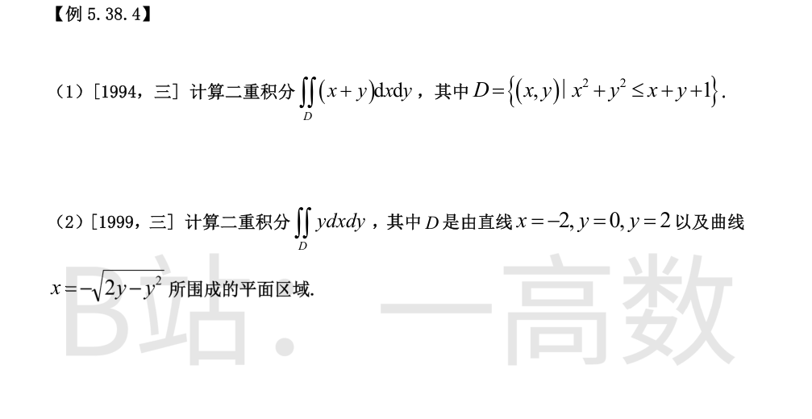
配方：$(x-\frac12)^2+(y-\frac12)^2\le\frac32$，即圆心 $(\frac12,\frac12)$、半径 $\sqrt{3/2}$ 的圆盘，面积 $=\frac{3\pi}{2}$。
由形心公式（圆盘形心即圆心）：$\iint_D x\,dxdy=\frac12\cdot\frac{3\pi}{2}$，$\iint_D y\,dxdy=\frac12\cdot\frac{3\pi}{2}$。
$$I=\Big(\frac12+\frac12\Big)\cdot\frac{3\pi}{2}=\frac{3\pi}{2}$$
x=−√(2y−y²) 是圆 x²+(y−1)²=1 的左半圆，D = 矩形 [−2,0]×[0,2] 挖去左半圆盘。
$$\iint_D y\,dxdy=\int_0^2 y\cdot2\,dy-\iint_{\text{半圆}}y\,dxdy=4-\bar y\cdot\frac{\pi}{2}$$
半圆盘（圆心 (0,1)，对称轴 y=1）的形心纵坐标 $\bar y=1$，故
$$I=4-\frac{\pi}{2}$$
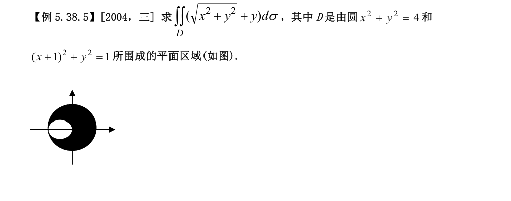
∬_D y dσ=0：D 关于 x 轴对称。
大圆盘上：$\iint\sqrt{x^2+y^2}\,d\sigma=\int_0^{2\pi}d\theta\int_0^2 r\cdot r\,dr=2\pi\cdot\frac83=\frac{16\pi}{3}$。
小圆盘 (x+1)²+y²≤1 即 r≤−2cosθ（θ∈[π/2,3π/2]）：
$$\iint\sqrt{x^2+y^2}\,d\sigma=\int_{\pi/2}^{3\pi/2}d\theta\int_0^{-2\cos\theta}r^2dr=-\frac83\int_{\pi/2}^{3\pi/2}\cos^3\theta\,d\theta=-\frac83\Big(-\frac43\Big)=\frac{32}{9}$$
$$I=\frac{16\pi}{3}-\frac{32}{9}$$
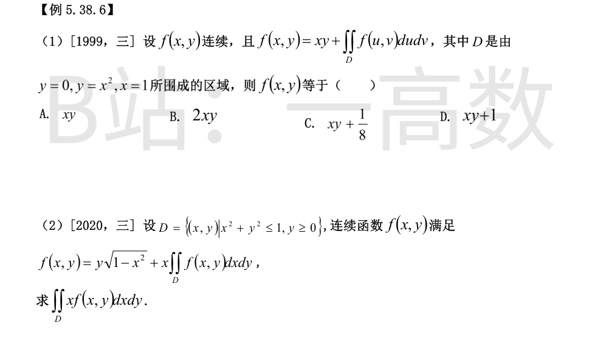
设 c=∬_D f(u,v)dudv，则 f=xy+c。两边再积分：
$$c=\iint_D xy\,dxdy+c\cdot\text{Area}(D)$$
$\text{Area}(D)=\int_0^1x^2dx=\frac13$；$\iint_D xy\,dxdy=\int_0^1 x\cdot\frac{x^4}{2}dx=\frac{1}{12}$。
$$c=\frac{1}{12}+\frac{c}{3}\Rightarrow\frac{2c}{3}=\frac{1}{12}\Rightarrow c=\frac18$$
故 f(x,y)=xy+1/8，选 C。
记 c=∬_D f dxdy。先求 c：
$$c=\iint_D y\sqrt{1-x^2}\,dxdy+c\iint_D x\,dxdy=\int_{-1}^1\sqrt{1-x^2}\cdot\frac{1-x^2}{2}dx+0=\int_0^1(1-x^2)^{3/2}dx$$
令 x=sin t：$\int_0^{\pi/2}\cos^4t\,dt=\frac{3\pi}{16}$，故 c=3π/16。
再求目标：
$$\iint_D xf\,dxdy=\iint_D xy\sqrt{1-x^2}\,dxdy+c\iint_D x^2 dxdy=0+\frac{3\pi}{16}\cdot\frac{\pi}{8}=\frac{3\pi^2}{128}$$
（第一项因关于 x 为奇而 D 对称为 0；上半单位圆盘 $\iint x^2=\frac12\cdot\frac{\pi}{4}=\frac{\pi}{8}$。）
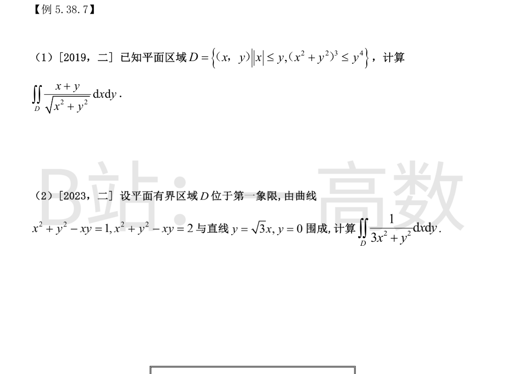
极坐标：(r²)³≤r⁴sin⁴θ ⇒ r≤sin²θ（需 sinθ≥0）；|x|≤y ⇒ π/4≤θ≤3π/4。
$$I=\int_{\pi/4}^{3\pi/4}(\cos\theta+\sin\theta)\,d\theta\int_0^{\sin^2\theta}r\,dr=\frac12\int_{\pi/4}^{3\pi/4}(\cos\theta+\sin\theta)\sin^4\theta\,d\theta$$
$\int_{\pi/4}^{3\pi/4}\cos\theta\sin^4\theta\,d\theta=\frac{\sin^5\theta}{5}\Big|_{\pi/4}^{3\pi/4}=0$；$\int_{\pi/4}^{3\pi/4}\sin^5\theta\,d\theta=2\int_{\pi/4}^{\pi/2}\sin^5\theta\,d\theta=2\int_0^{1/\sqrt2}(1-u^2)^2du$（u=cosθ）$=2\sqrt{\tfrac12}\big(1-\tfrac13+\tfrac{1}{20}\big)=\frac{43\sqrt2}{60}$。
$$I=\frac12\cdot\frac{43\sqrt2}{60}=\frac{43\sqrt2}{120}$$
极坐标 x=ρcosφ, y=ρsinφ：x²+y²−xy=ρ²(1−sinφcosφ)，两条曲线对应 ρ₁=1/√(1−sinφcosφ) 与 ρ₂=√2ρ₁；直线对应 φ=0 与 φ=π/3。3x²+y²=ρ²(3cos²φ+sin²φ)。
$$I=\int_0^{\pi/3}\frac{d\varphi}{3\cos^2\varphi+\sin^2\varphi}\int_{\rho_1}^{\rho_2}\frac{d\rho}{\rho}=\ln\sqrt2\int_0^{\pi/3}\frac{d\varphi}{3\cos^2\varphi+\sin^2\varphi}$$
$$\int_0^{\pi/3}\frac{d\varphi}{3\cos^2\varphi+\sin^2\varphi}=\int_0^{\pi/3}\frac{d(\tan\varphi)}{3+\tan^2\varphi}=\frac1{\sqrt3}\arctan\frac{\tan\varphi}{\sqrt3}\Big|_0^{\pi/3}=\frac1{\sqrt3}\cdot\frac{\pi}{4}=\frac{\pi}{4\sqrt3}$$
$$I=\frac{\pi\ln2}{8\sqrt3}=\frac{\sqrt3\pi\ln2}{24}$$
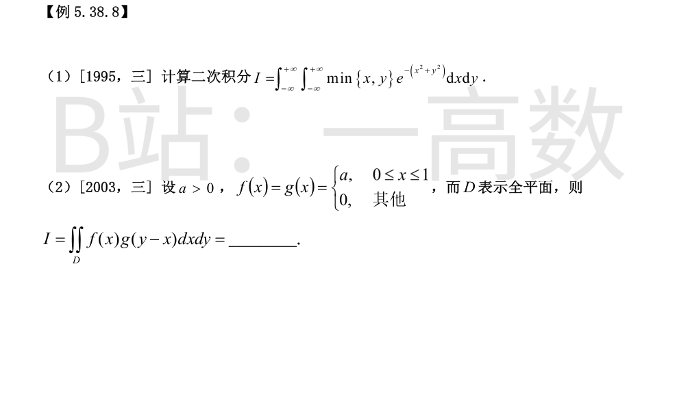
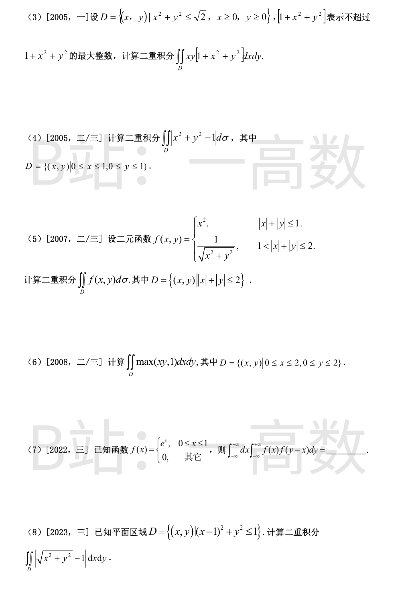
用直线 y=x 分平面，两半平面上积分相等：
$$I=2\iint_{x>y}x\,e^{-x^2-y^2}dxdy=2\int_{-3\pi/4}^{\pi/4}\cos\theta\,d\theta\int_0^{+\infty}r^2e^{-r^2}dr$$
$\int_{-3\pi/4}^{\pi/4}\cos\theta\,d\theta=\sqrt2$；$\int_0^{+\infty}r^2e^{-r^2}dr=\frac{\sqrt\pi}{4}$。
$$I=2\cdot\sqrt2\cdot\frac{\sqrt\pi}{4}=\frac{\sqrt{2\pi}}{2}$$
先对 y 积分：
$$\int_{-\infty}^{+\infty}g(y-x)dy=\int_0^1 a\,dt=a$$
$$I=\int_{-\infty}^{+\infty}f(x)\cdot a\,dx=a\int_0^1 a\,dx=a^2$$
0≤x²+y²≤√2 ⇒ 1≤1+x²+y²<1+√2<3，故取值：x²+y²<1 时取 1；1≤x²+y²≤√2 时取 2。
$$\iint_{r<1}xy\,dxdy=\int_0^{\pi/2}\sin\theta\cos\theta\,d\theta\int_0^1r^3dr=\frac12\cdot\frac14=\frac18$$
$$\iint_{1\le r\le 2^{1/4}}xy\,dxdy=\frac12\int_1^{\sqrt2}r^3dr=\frac{2-1}{8}=\frac18,\quad \text{其上被 2 乘}=\frac14$$
$$I=\frac18+\frac14=\frac38$$
$$I=\iint_D(x^2+y^2-1)d\sigma+2\iint_{D,\,x^2+y^2<1}(1-x^2-y^2)d\sigma$$
第一块：$\int_0^1\!\!\int_0^1(x^2+y^2-1)dxdy=\frac13+\frac13-1=-\frac13$。
第二块（四分之一单位圆盘内）：$\frac{\pi}{4}-\int_0^{\pi/2}\!\!\int_0^1 r^3dr\,d\theta=\frac{\pi}{4}-\frac{\pi}{8}=\frac{\pi}{8}$。
$$I=-\frac13+2\cdot\frac{\pi}{8}=\frac{\pi}{4}-\frac13$$
分两块，各用对称性取 4 倍第一象限。
菱形内：$4\int_0^1 x^2(1-x)dx=4\big(\frac13-\frac14\big)=\frac13$。
环带（第一象限部分 1/(cosθ+sinθ)≤r≤2/(cosθ+sinθ)）：
$$4\int_0^{\pi/2}d\theta\int_{\frac{1}{\cos\theta+\sin\theta}}^{\frac{2}{\cos\theta+\sin\theta}}\frac1r\cdot r\,dr=4\int_0^{\pi/2}\frac{d\theta}{\cos\theta+\sin\theta}=\frac{4}{\sqrt2}\int_0^{\pi/2}\csc\Big(\theta+\frac{\pi}{4}\Big)d\theta$$
$$=2\sqrt2\Big[\ln\tan\frac{\theta+\pi/4}{2}\Big]_0^{\pi/2}=2\sqrt2\ln\frac{\tan(3\pi/8)}{\tan(\pi/8)}=2\sqrt2\ln(1+\sqrt2)^2=4\sqrt2\ln(1+\sqrt2)$$
$$I=\frac13+4\sqrt2\ln(1+\sqrt2)$$
xy≥1 的部分：x∈[1/2,2]，y∈[1/x,2]。
$$\iint_{xy\ge1}xy\,dxdy=\int_{1/2}^2 x\cdot\frac12\Big(4-\frac{1}{x^2}\Big)dx=\frac12\Big[2x^2-\ln x\Big]_{1/2}^2=\frac12\Big(\frac{15}{2}-2\ln2\Big)=\frac{15}{4}-\ln2$$
其余部分取 1：面积 $=4-\int_{1/2}^2(2-\tfrac1x)dx=4-(3-2\ln2)=1+2\ln2$。
$$I=\frac{15}{4}-\ln2+1+2\ln2=\frac{19}{4}+\ln2$$
内层对 y 平移：$\int_{-\infty}^{+\infty}f(y-x)dy=\int_{-\infty}^{+\infty}f(t)dt=\int_0^1e^tdt=e-1$。
$$\int_{-\infty}^{+\infty}f(x)(e-1)dx=(e-1)\int_0^1e^xdx=(e-1)^2$$
极坐标：D 为 r≤2cosθ（|θ|≤π/2），单位圆 r=1 与 D 相交于 |θ|≤π/3 处。
对 |θ|≤π/3：$F(\theta)=\int_0^{2\cos\theta}|r-1|r\,dr=\frac{1}{3}+\frac83\cos^3\theta-2\cos^2\theta$；
对 π/3≤|θ|≤π/2：$F(\theta)=2\cos^2\theta-\frac83\cos^3\theta$。
$$I=2\Big[\int_0^{\pi/3}\big(\tfrac13+\tfrac83\cos^3\theta-2\cos^2\theta\big)d\theta+\int_{\pi/3}^{\pi/2}\big(2\cos^2\theta-\tfrac83\cos^3\theta\big)d\theta\Big]$$
$\int_0^{\pi/3}\cos^3=\frac{3\sqrt3}{8},\ \int_0^{\pi/3}\cos^2=\frac{\pi}{6}+\frac{\sqrt3}{8},\ \int_{\pi/3}^{\pi/2}\cos^2=\frac{\pi}{12}-\frac{\sqrt3}{8},\ \int_{\pi/3}^{\pi/2}\cos^3=\frac23-\frac{3\sqrt3}{8}$。
代入：第一括号 $=\frac{3\sqrt3}{4}-\frac{2\pi}{9}$，第二括号 $=\frac{\pi}{6}+\frac{3\sqrt3}{4}-\frac{16}{9}$。
$$I=2\Big(\frac{3\sqrt3}{2}-\frac{\pi}{18}-\frac{16}{9}\Big)=3\sqrt3-\frac{32}{9}-\frac{\pi}{9}\approx1.291>0$$
（验算：I=∬_D(r−1)dσ+2∬_{D∩r<1}(1−r)dσ=(32/9−π)+2(4π/9+3√3/2−32/9)，同值。）
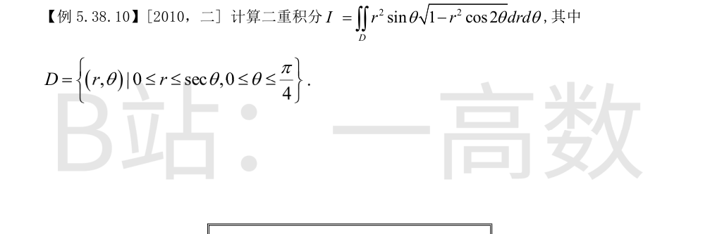
化为直角坐标：r²sinθ·drdθ = (rsinθ)·(rdrdθ) = y·dxdy；又 1−r²cos2θ = 1−(x²−y²) = 1−x²+y²。区域：0≤θ≤π/4, r≤secθ 即 {0≤y≤x≤1}。
$$I=\iint_{0\le y\le x\le1}y\sqrt{1-x^2+y^2}\,dxdy=\int_0^1 dx\int_0^x y\sqrt{1-x^2+y^2}\,dy$$
内层：$$\int_0^x y\sqrt{1-x^2+y^2}\,dy=\frac13\Big[(1-x^2+y^2)^{3/2}\Big]_0^x=\frac13\Big[1-(1-x^2)^{3/2}\Big]$$
$$I=\frac13-\frac13\int_0^1(1-x^2)^{3/2}dx=\frac13-\frac13\int_0^{\pi/2}\cos^4t\,dt=\frac13-\frac13\cdot\frac{3\pi}{16}=\frac13-\frac{\pi}{16}$$
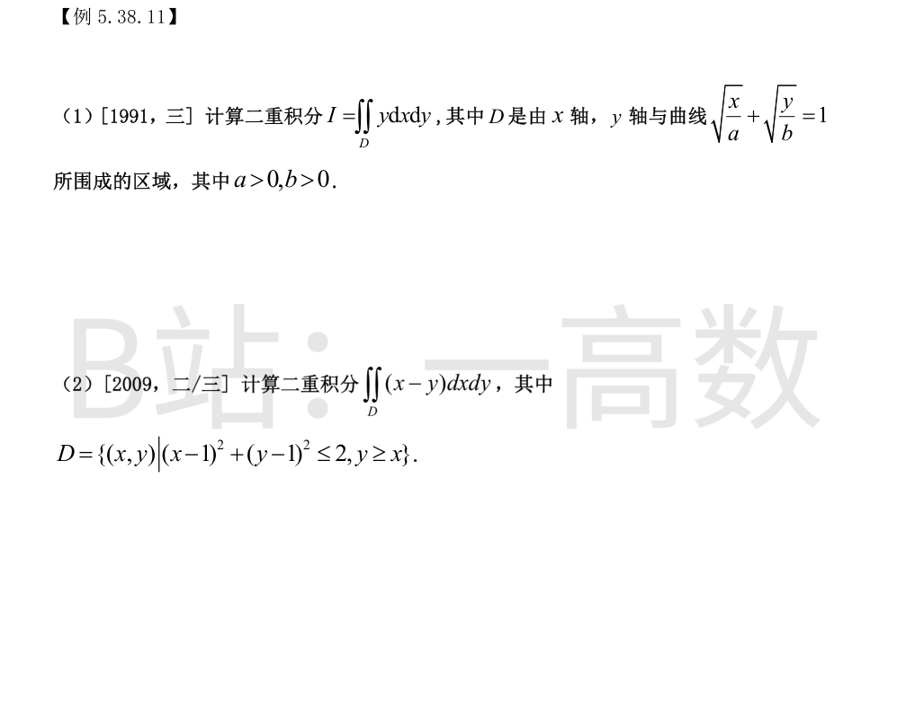
令 x=a u², y=b v²（u,v≥0），则 √(x/a)+√(y/b)=u+v=1，J=4ab uv，dxdy=4ab\,uv\,dudv。
$$I=\iint_{u+v\le1}bv^2\cdot4ab\,uv\,dudv=4ab^2\int_0^1 u\,du\int_0^{1-u}v^3dv=ab^2\int_0^1 u(1-u)^4du$$
$$\int_0^1u(1-u)^4du=B(2,5)=\frac{1!\cdot4!}{6!}=\frac{1}{30},\qquad I=\frac{ab^2}{30}$$
令 u=x−1, v=y−1：区域 {u²+v²≤2, v≥u}，被积函数 u−v。极坐标（u=rcosφ, v=rsinφ）：v≥u ⇒ φ∈[π/4,5π/4]，r≤√2。
$$I=\int_{\pi/4}^{5\pi/4}(\cos\varphi-\sin\varphi)d\varphi\int_0^{\sqrt2}r^2dr=\frac{2\sqrt2}{3}\big[\sin\varphi+\cos\varphi\big]_{\pi/4}^{5\pi/4}$$
$$=\frac{2\sqrt2}{3}\big[(-\sqrt2)-(\sqrt2)\big]=-\frac{8}{3}$$
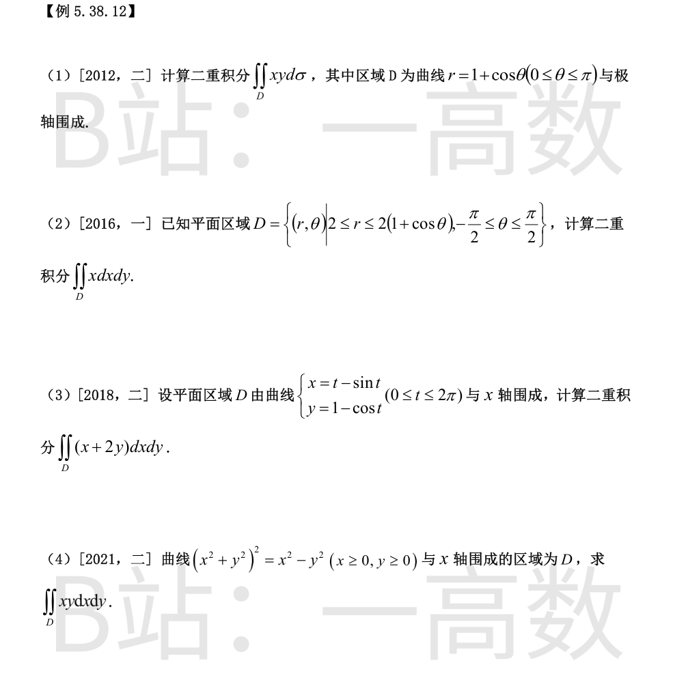
极坐标：
$$I=\int_0^{\pi}\!\!\int_0^{1+\cos\theta}r^3\cos\theta\sin\theta\,dr\,d\theta=\frac14\int_0^{\pi}\cos\theta\sin\theta(1+\cos\theta)^4d\theta$$
展开 $(1+\cos\theta)^4=1+4c+6c^2+4c^3+c^4$。含奇数次幂 cos 的项积分为 0；$\int_0^{\pi}\sin\theta\,d\theta=2$，$\int_0^{\pi}\sin\theta\cos^2\theta\,d\theta=\frac23$，$\int_0^{\pi}\sin\theta\cos^4\theta\,d\theta=\frac25$。
$$I=\frac14\big(1\cdot2+6\cdot\tfrac23+1\cdot\tfrac25\big)=\frac14\cdot\frac{32}{5}=\frac85$$
极坐标：
$$I=\int_{-\pi/2}^{\pi/2}\cos\theta\,d\theta\int_2^{2(1+\cos\theta)}r^2dr=\frac{8}{3}\int_{-\pi/2}^{\pi/2}\cos\theta\big[(1+\cos\theta)^3-1\big]d\theta$$
展开：$\cos\theta\big[(1+c)^3-1\big]=\cos\theta(3c+3c^2+c^3)=3c^2+3c^3+c^4$。奇项积分为 0；$\int_{-\pi/2}^{\pi/2}\cos^2\theta\,d\theta=\frac{\pi}{2}$，$\int_{-\pi/2}^{\pi/2}\cos^4\theta\,d\theta=\frac{3\pi}{8}$。
$$I=\frac83\Big(3\cdot\frac{\pi}{2}+\frac{3\pi}{8}\Big)=\frac83\cdot\frac{15\pi}{8}=5\pi$$
竖条带：x=x(t) 递增，y 从 0 到 y(t)：
$$I=\int_0^{2\pi}\big[x(t)y(t)+y(t)^2\big]x'(t)dt=\int_0^{2\pi}(t-\sin t)(1-\cos t)^2dt+\int_0^{2\pi}(1-\cos t)^3dt$$
第一项中 $\int_0^{2\pi}\sin t(1-\cos t)^2dt=0$（凑微分），$\int_0^{2\pi}t(1-\cos t)^2dt=\int_0^{2\pi}t(1-2\cos t+\cos^2t)dt=2\pi^2-0+\pi^2=3\pi^2$。
第二项：$\int_0^{2\pi}(1-3\cos t+3\cos^2t-\cos^3t)dt=2\pi+3\pi=5\pi$。
$$I=3\pi^2+5\pi$$
双纽线极坐标方程 r²=cos2θ，第一象限内 θ∈[0,π/4]。
$$I=\int_0^{\pi/4}\!\!\int_0^{\sqrt{\cos2\theta}}r^3\cos\theta\sin\theta\,dr\,d\theta=\frac14\int_0^{\pi/4}\cos\theta\sin\theta\cos^22\theta\,d\theta=\frac18\int_0^{\pi/4}\sin2\theta\cos^22\theta\,d\theta$$
$$=\frac18\Big[-\frac{\cos^32\theta}{6}\Big]_0^{\pi/4}=\frac18\cdot\frac16=\frac{1}{48}$$